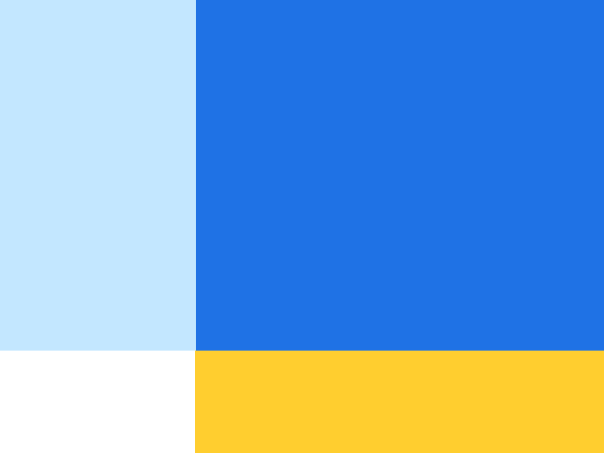
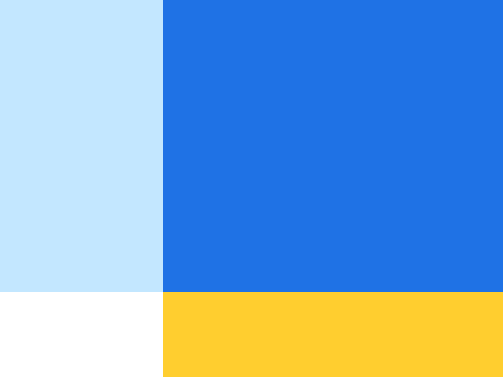

I was responsible for creating, updating, and maintaining Credit Sesame’s new product design language. I worked with a designer in building out a color system where we defined the usage of each color band, and ensured that they met AA accessibility standards. I facilitated conversations around defining the illustration system. I also documented component usage guidelines, visual specs, and interactions for developer handoff.
 
PayPal partnered with an agency to redesign the visual system for the consumer product on mobile platforms. This partnership was a stepping stone to giving the design system a fresh new look that would later be adopted for the enterprise product, and span across web and mobile. One of the patterns I worked on is Icon button.
I led Bright’s product design system, Bagherra, and worked with engineering to tokenize and build our foundation—color, type, etc.—to support light and dark mode for web and iOS.
I also created an educational resource hub to improve collaboration cross functionally, and familiarize teams with Bagherra and other internal tools.